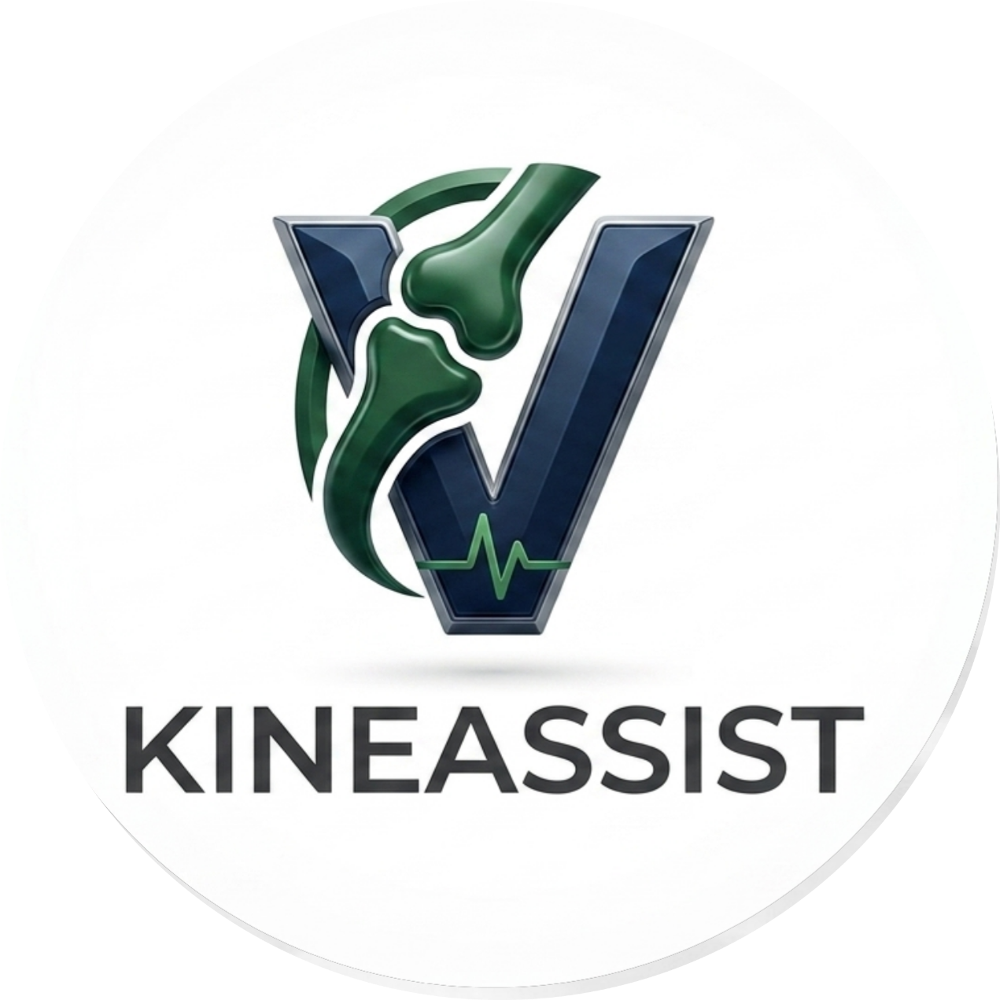

Installation & Configuration
Ce guide vous accompagne pas à pas pour installer et déployer KineAssist sur votre environnement de développement local.
1. Prérequis Système
Avant de commencer, assurez-vous que votre système dispose de :
{kind=link}

Python 3.10 ou supérieur : Recommandé pour une compatibilité totale avec OpenCV et MediaPipe.
Une Webcam fonctionnelle : Nécessaire pour la capture et le traitement vidéo en temps réel.
Git : Pour cloner le dépôt.
2. Installation des Dépendances
Clonez le dépôt et placez-vous dans le répertoire du projet :
git clone https://github.com/ayaidh123/Kineassist.git cd Kineassist
Il est fortement conseillé de créer et d’activer un environnement virtuel (venv) pour isoler les dépendances :
Sur Windows (PowerShell) :
python -m venv venv .\venv\Scripts\Activate.ps1
Sur macOS / Linux :
python3 -m venv venv source venv/bin/activate
Installez l’ensemble des bibliothèques nécessaires à l’aide de
requirements.txt:pip install --upgrade pip pip install -r requirements.txt
3. Scripts de Pré-configuration Obligatoires
Avant de lancer la plateforme web pour la première fois, deux scripts d’initialisation doivent être exécutés.
Génération des courbes numpy de référence (generate_references.py)
Ce script génère les trajectoires cinétiques idéales de référence (les fichiers .npy) pour les exercices. Il les stocke dans le dossier data/references/ :
python generate_references.py
Indexation du RAG Sémantique (scripts/build_rag_index.py)
Ce script charge les guides officiels de rééducation de la HAS (fichiers .txt du répertoire data/protocols/), calcule leurs empreintes sémantiques vectorielles de 384 dimensions via le modèle local léger all-MiniLM-L6-v2, puis génère et sauvegarde l’index vectoriel local FAISS dans data/rag_index/ :
python scripts/build_rag_index.py
4. Démarrage de la Plateforme
KineAssist intègre un script de démarrage unifié run.py qui gère automatiquement le lancement simultané de deux serveurs locaux :
Le serveur de la Landing Page (présentation générale) : Démarré sur le port standard HTTP 8000.
Le serveur d’application Streamlit (Portails Patient et Kiné) : Démarré sur le port 8501.
Pour lancer KineAssist, exécutez simplement :
python run.py
Le script démarrera les serveurs, puis ouvrira automatiquement votre navigateur par défaut à l’adresse de la Landing Page :
http://localhost:8000.Pour accéder directement à la plateforme clinique et démarrer une session, rendez-vous sur :
http://localhost:8501.Pour arrêter l’application, effectuez la combinaison
Ctrl + Cdans votre terminal.